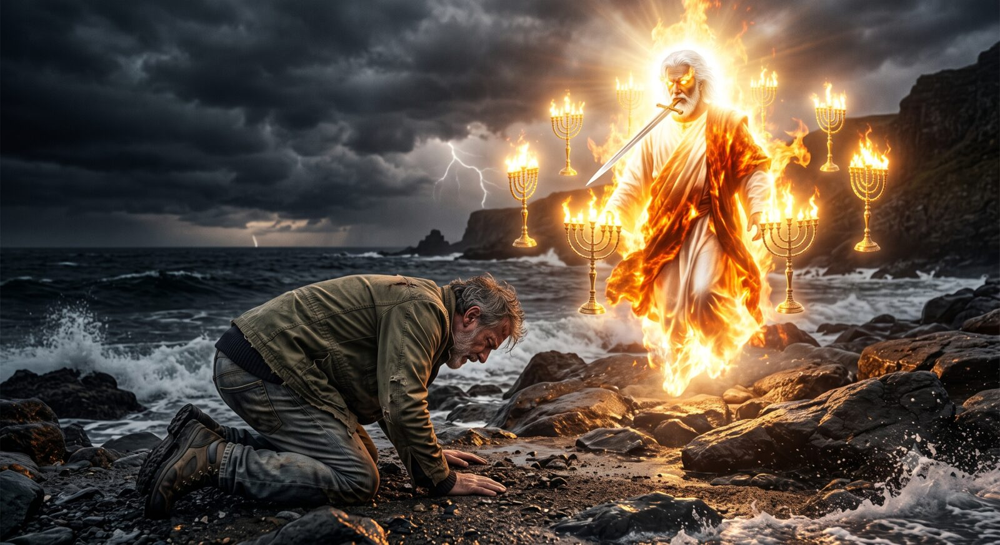
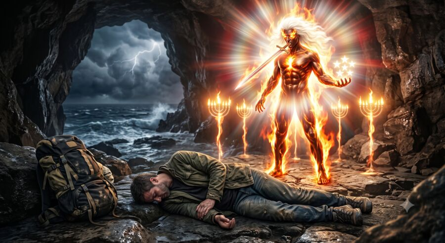
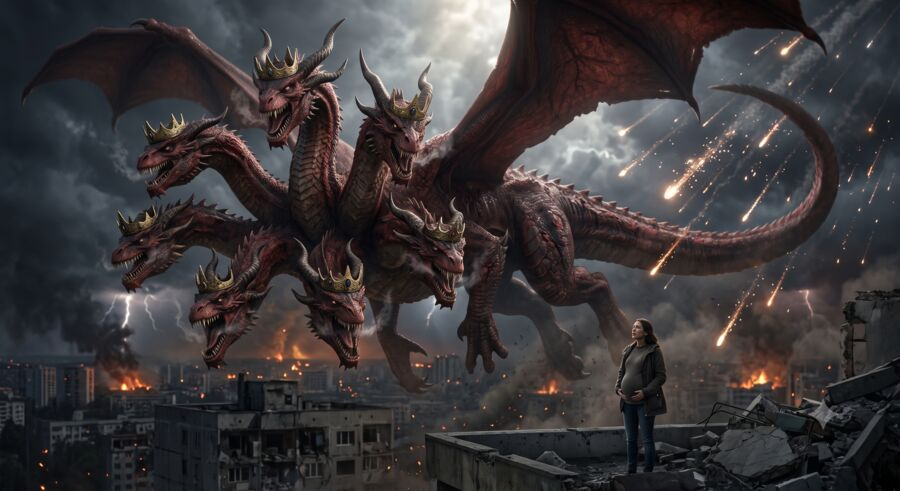
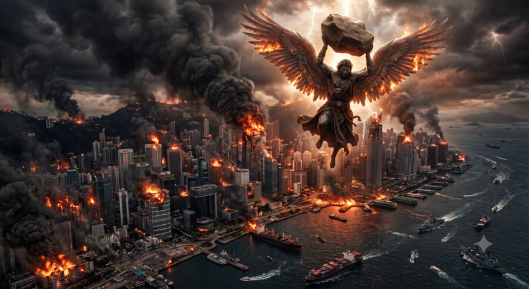

Um guia completo, capítulo a capítulo
O livro mais temido da Bíblia, do primeiro ao último capítulo — sem cortes, sem enrolação, com os versículos originais e o que eles realmente descrevem.

Por que ler isso agora
A maioria das pessoas conhece o Apocalipse por pedaços soltos: a marca da besta, o 666, o Armagedom, memes e referências de filme. Poucas leram o texto inteiro, na ordem em que ele acontece, entendendo o que cada imagem realmente significava para quem escreveu e para quem leu pela primeira vez.
Este livro percorre os 22 capítulos originais, reorganizados em 34 capítulos curtos e ilustrados, um para cada grande cena: os selos, os cavaleiros, as trombetas, as bestas, as taças, a queda de Babilônia, e o fim que o texto descreve para tudo isso.
O que vem dentro
34 capítulos ilustrados — cada grande cena do Apocalipse, do início ao fim, com uma imagem própria e explicação em linguagem simples.
Os versículos originais, na tradução de João Ferreira de Almeida, citados a cada passo, para você ler com as próprias palavras do texto.
Contexto histórico em cada capítulo: por que cada imagem (a besta, o número, a cidade) fazia sentido para quem viveu naquela época.
Um espaço de reflexão pessoal em cada capítulo, convidando você a pensar na própria vida diante do que está sendo descrito.
Um olhar sobre o mundo de hoje: em boa parte dos capítulos, um bloco especula, de forma plausível, como aquela profecia poderia se manifestar agora.
Pronto para imprimir: a mesma edição pode ser lida na tela ou impressa em papel A4, com diagramação própria para isso.
Um pouco do que você vai ver



Para quem é este livro
Edição digital completa
34 capítulos ilustrados · versículos originais · contexto histórico · reflexão pessoal · pronto para impressão em A4.
R$ 67R$ 37
Perguntas frequentes
Um arquivo digital que abre em qualquer navegador, no celular, tablet ou computador, sem precisar instalar nada. A mesma edição também pode ser impressa em papel A4.
Não. O livro explica cada cena do zero, na ordem em que ela acontece, sem exigir conhecimento prévio do texto bíblico.
Não. É uma leitura literária e histórica do texto, capítulo a capítulo, sem vínculo com nenhuma instituição religiosa específica.
Único. Você paga uma vez, R$ 37, e o acesso é seu, sem cobranças recorrentes.